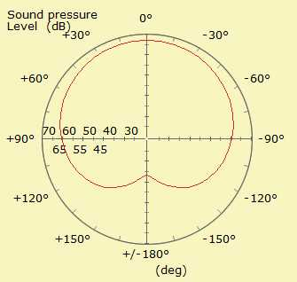

| Identifier | CardioLevel= | |
| Format | dB | |
| Purpose | Level of rear-attenuation | |
| Used in | Pressure_Box | |
Simulates in a simple way the directivity for the rear radiation of a Pressure_Box. CardioLevel= is the level on the rear-axis opposite of the radiating point.
For example
Pressure_Box "Woofer"
DrvGroup=1001
Position= 1002 theta=90 phi=0 AxialRotate=0 RefNodes=N
DrvWeight=1.0
CabDim=220mm, 200mm, 200mm
CabPos=0, 0mm
DiaphShape=Disc; dD=120mm
CardioLevel=-30dB
gives
